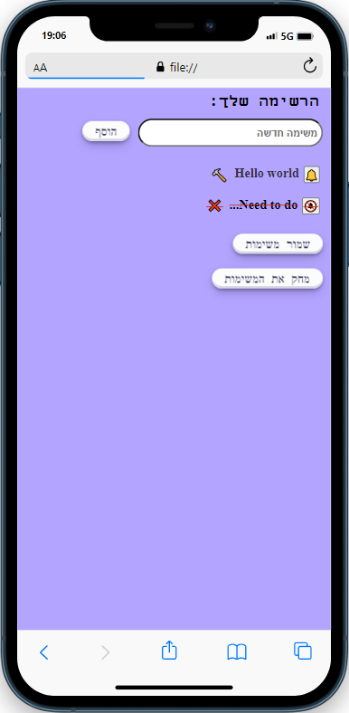

To Do list - דף משימות
דף משימות הוא כלי נפוץ שמשמש לניהול משימות ולתכנון יומי, שבועי או חודשי. זהו דף עם רשימת משימות שיש לבצע, שמתוארגן לפי עדיפות, מועד סיום או נושא. דפי המשימות נמצאים בשימוש בעיקר על ידי אנשים שמחפשים דרך ממוקדת לנהל את זמנם ולהיות מאורגנים יותר


